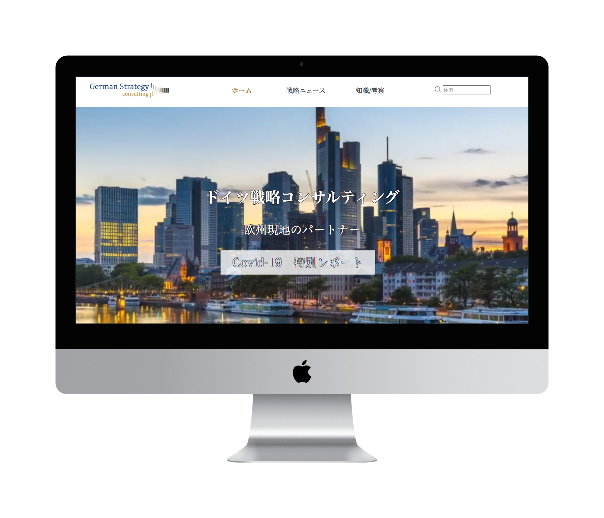

Ich habe 3 Jahre Erfahrung mit Web Frontend-Entwicklung. Meine Leidenschaft ist Programmierung und Webdesign. Optimierung für verschiedene Endgeräten. Programmierung individueller Funktionalitäten für SEO. Ich kann jedes komplexe Layout und die Anforderungen von Kunden mit meinen Ideen im Web umsetzten. Ich lege großen Wert auf nutzerorientiertes Design und Benutzerfreundlichkeit, daher glaube ich, dass es wichtig ist, eng mit Designern und Entwicklungsteams zusammenzuarbeiten.
TOMOYA
Projekte

Corporate Webseite für German Strategy Consulting.
Konzeption, Entwicklung, Design
HTML5, CSS3, Javascript, PHP, Wordpress, Figma
" Tomoya arbeitete mit mir am Design und an den Funktionen der Webseite, was zu einem großartigen Ergebnis führte.
Er ist sehr proaktiv und freundlich im Gedankenaustausch und sehr flexibel bei der Durchführung von Änderungen. "
Hideyuki Wada at German Strategy Consulting
To Do List
Ich gestaltete die To-Do List in meiner Freizeit mit HTML5, CSS3, Javascript, jQuery.
Skills
Programmiersprache & Tools
Javascript (ES6)
HTML5
CSS3
Sass
jQuery
PHP
MySQL
Wordpress
TYPO3
Photoshop
Figma
Responsive Web-Design
GitHub 
My Story
Hi, danke, dass Sie mein Portfolio besuchen und bis hier gelesen haben. Ich kam 2015 mit dem Traum nach Deutschland, ein japanisches Restaurant in Europa zu eröffnen. 2017 musste ich diesen Traum aufgeben, da ich Allergien gegen die Küchenhandschuhe und Reinigungsmittel entwickelt habe. Danach habe ich eine deutsche Frau in Japan geheiratet und lebe seit 2018 wieder in Deutschland. Im Jahr 2018 begann ich Deutsch und Web-Entwicklung gleichzeitig zu lernen, da ich mich seit längerer Zeit dafür interessierte. Ich verliebte mich in Programmierung und Design, denn sie ermöglichen es, meine Ideen im Web auszudrücken und zu formen. Außerdem macht mir der Prozess der Entwicklung der Webseite oder Applikationen Spaß - von Konzeption über Entwurf, Layout bis zu Coding. 2019 habe ich meine Deutsch-Prüfung B2 Niveau bestanden und im März 2020 die Weiterbildung zum Web Entwickler abgeschlossen. Ich bin immer bestrebt, meine Programmierkenntnisse zu verbessern und zu vertiefen, damit ich sie bei der Gestalltung der Webseiten anwenden und nützliche Applikation entwickeln kann. Mein Traum ist es, den awwwards zu gewinnen, also momentan konzentriere ich mich React, three.js, GSAP und Deutsch C1 zu erlernen. Meine Neugierde hat kein Ende in Sicht. :) Mir macht es Spaß, die Webseite zu konzipieren, zu gestalten, das Layout zu entwerfen und zu programmieren. Außerdem denke ich gerne darüber nach, wie ich die Wünsche und die Marke meines Kunden im Web zum Ausdruck bringen kann. Wenn meine Kunden mit meiner erstellteten Webseite zufrieden sind, bin ich sehr glücklich :)
Lebenslauf
Ich freue mich auf Ihre Kontakt und uns kennenzulernen. :)